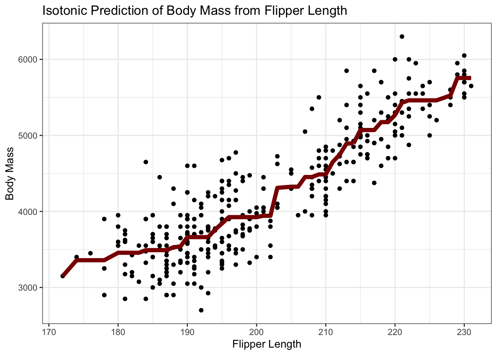

STAT 3106 Problem Set #3: Classification & Ensemble Methods
- Problem Set Assigned: Monday October 26
- Due Date: Friday November 13 at 5:00PM on Canvas/Courseworks1
Submit your assignment as a PDF on Canvas/Courseworks.
Please observe the following guidelines when submitting an assignment:
- Use 10-12 point font, 1.25 or 1.5-spaced.
- Each problem should start on a new page. It is allowed, but not required, for subparts to start a new page, e.g., you do not need a page break before starting 2(b), but you do need a page break before starting 2(a).
- When including code alongside a submission, run it through a code formatting tool and keep lines to no more than 80 characters so they don’t run off the end of the page. Unintelligible code is presumtively incorrect.
- Figures and tables should have proper titles, axis labels, units, etc.
You can use any formatting engine you prefer (jupyter, R Markdown, etc), but I recommend Quarto.
Examples:
You may work with as many classmates as you wish, but please note the names of classmates with whom you collaborated.
\[\newcommand{\bx}{\mathbf{x}} \newcommand{\V}{\mathbb{V}} \newcommand{\E}{\mathbb{E}} \newcommand{\P}{\mathbb{P}}\]
Introduction
In this problem set, you will consider a wide variety of tools for classification. In addition to comparing different classifiers, you will also examine the calibration of different predictions, see how post-processing techniques can be used to improve calibration, and see how classifiers can be used to perform anti-bias audits in large data sets.
Data Files
For this data set, we introduce a data taken from the Federal HMDA Dataset. Under the Home Mortgage Disclosure Act, lenders are required to report details of all mortgage applications they process to the federal government to ensure compliance with the Fair Housing Act (and related rules and regulations). I have taken the full data set of approximately 13.5 million mortgage applications and focused on a smaller set of around 2.3 million applications for which all data was clean and easily interpreted. The reduced data set can be found here.
Most of the features of this data set are self-explanatory:
Rows: 2315497 Columns: 21
── Column specification ────────────────────────────────────────────────────────
Delimiter: ","
chr (6): city, state, race, sex, loan_type, loan_size
dbl (12): loan_amount, loan_term, property_value, income, debt_to_income_rat...
lgl (3): hispanic_or_latino, approved, prior_preapproval
ℹ Use `spec()` to retrieve the full column specification for this data.
ℹ Specify the column types or set `show_col_types = FALSE` to quiet this message.| Name | hdma_data |
| Number of rows | 2315497 |
| Number of columns | 21 |
| _______________________ | |
| Column type frequency: | |
| character | 6 |
| logical | 3 |
| numeric | 12 |
| ________________________ | |
| Group variables | None |
Variable type: character
| skim_variable | n_missing | complete_rate | min | max | empty | n_unique | whitespace |
|---|---|---|---|---|---|---|---|
| city | 0 | 1 | 5 | 71 | 0 | 418 | 0 |
| state | 0 | 1 | 2 | 2 | 0 | 54 | 0 |
| race | 0 | 1 | 5 | 41 | 0 | 9 | 0 |
| sex | 0 | 1 | 4 | 17 | 0 | 4 | 0 |
| loan_type | 0 | 1 | 2 | 12 | 0 | 4 | 0 |
| loan_size | 0 | 1 | 5 | 8 | 0 | 2 | 0 |
Variable type: logical
| skim_variable | n_missing | complete_rate | mean | count |
|---|---|---|---|---|
| hispanic_or_latino | 0 | 1 | 0.14 | FAL: 1988922, TRU: 326575 |
| approved | 0 | 1 | 0.67 | TRU: 1550060, FAL: 765437 |
| prior_preapproval | 0 | 1 | 0.02 | FAL: 2258537, TRU: 56960 |
Variable type: numeric
| skim_variable | n_missing | complete_rate | mean | sd | p0 | p25 | p50 | p75 | p100 | hist |
|---|---|---|---|---|---|---|---|---|---|---|
| loan_amount | 0 | 1 | 266280.00 | 365750.87 | 5000 | 85000.00 | 195000.00 | 345000.00 | 150005000 | ▇▁▁▁▁ |
| loan_term | 0 | 1 | 315.71 | 85.74 | 1 | 300.00 | 360.00 | 360.00 | 3660 | ▇▁▁▁▁ |
| property_value | 0 | 1 | 564823.18 | 4193910.10 | 5000 | 275000.00 | 405000.00 | 625000.00 | 2147483647 | ▇▁▁▁▁ |
| income | 0 | 1 | 305.61 | 93331.02 | 0 | 70.00 | 113.00 | 190.00 | 120000000 | ▇▁▁▁▁ |
| debt_to_income_ratio | 0 | 1 | 41.85 | 16.87 | 20 | 30.00 | 30.00 | 60.00 | 61 | ▃▇▁▁▇ |
| tract_population | 0 | 1 | 4791.01 | 2135.46 | 0 | 3434.00 | 4535.00 | 5827.00 | 30199 | ▇▂▁▁▁ |
| tract_minority_population_percent | 0 | 1 | 34.90 | 25.35 | 0 | 14.73 | 27.25 | 49.57 | 100 | ▇▆▃▂▂ |
| tract_to_msa_income_percentage | 0 | 1 | 111.62 | 41.78 | 0 | 85.00 | 107.00 | 132.00 | 516 | ▇▇▁▁▁ |
| tract_owner_occupied_units | 0 | 1 | 1241.31 | 572.13 | 0 | 842.00 | 1188.00 | 1576.00 | 6276 | ▇▆▁▁▁ |
| tract_one_to_four_family_homes | 0 | 1 | 1664.34 | 678.27 | 0 | 1216.00 | 1618.00 | 2053.00 | 8233 | ▇▇▁▁▁ |
| tract_median_age_of_housing_units | 0 | 1 | 36.18 | 18.21 | -1 | 23.00 | 36.00 | 49.00 | 80 | ▃▇▇▅▂ |
| ltv | 0 | 1 | 154.18 | 49361.87 | 0 | 52.31 | 75.00 | 89.90 | 49000000 | ▇▁▁▁▁ |
Note that three features in this data set refer to protected classes under US antidiscrimination law (race, sex, and ethnicity, here reported as “Hispanic/Latino” or “Not Hispanic/Latino” following relevant Federal Guidance.) You should not use these ‘sensitive’ features in your initial analysis until you reach the anti-discrimination study in the final question.
The tract quantities return to the census tract in which the property to be purchased is located. ltv refers to loan-to-value, the fraction of the property’s total value to be paid via the mortgage.2
The (binary) response of interest is the approved flag, indicating whether the application was ultimately approved. This data is reasonably well-balanced with approximately 66% approvals and 33% disapprovals.
1 Review: ML Foundations and Regression (12 points)
Answer the following short answer questions, worth two points each:
-
When fitting a model via a first-order (stochastic gradient) methods, the choice of (mini-)batch size is an important parameter; machine learners typically choose the mini-batch size to balance the pros and cons of full batch and one-at-a-time (online) gradient methods.
Explain these pros and cons and why a moderate mini-batch size is typically used (32, 128, 512, etc).
You do not need to argue for a specific amount, as the optimal batch size is often model, data, and hardware specific. Just explain what the pros and cons of each extreme end of the spectrum are.
-
Rank the following models from highest to lowest (statistical) complexity:
- Ridge Regression
- OLS
- \(3\)-Nearest Neighbor Regression
- 4th Order Polynomial Regression (fourth order expansions across all combinations of features)
- A spline model with 4 knots in one feature and no non-linearity in any other features
- \(n-2\)-Nearest Neighbor Regression
What are the practical trade-offs when deciding the proportion of data to allocate to the validation set versus the training set in a data-scarce environment? How does cross-validation attempt to navigate these tradeoffs?
(Multi-)collinearity is an oft-cited boogeyman when applying regression models. Explain why this is not actually a problem if you are only interested in prediction and what sort of techniques can be used to mitigate any adverse effects.
To predict the number of rare birds observed in a given region, enterprising ornithologists will build a model that incorporates weather, time of year, migration patterns, food availability, and proximity to humans. What type of generalized linear model would be appropriate for this task? Note both the link function and the sampling distribution?
LASSO regression and Additive Models both attempt to provide a high degree of interpretability. Compare and contrast these two methods, taking care to specifically contrast the type of interpretability each method provides and the different regimes in which they may be used.
2 Practice of Machine Learning (12 points)
Consider the scenario below in which I describe a hypothetical application of ML. There are (at least) 4 issues in how the ML system is developed, tested, and deployed. Identify three distinct issues and, for each issue you identify, describe:
- The mistake that was made (1 points)
- The likely adverse impact arising from the mistake (1 points)
- What should have been done instead (2 points)
(This is what lawyers might call an “Issue Spotter” question.)
Scenario: Following your helpful feedback in Problem Set #02, the good folks at Hamilton, Butler and Low (HBL) Consulting have decided to rework their automated talent interview pipeline. The People Analytics team were asked to develop a (probabilistic) talent recruitment classifier that can be used to perform resume scans; the result was Project CROWN (Candidate Ranking for Onboarding and Welcoming Newcomers).
CROWN’s objective was to predict whether an applicant represents an “Elite Associate” (\(Y = 1\)), defined as finishing in the top 5% of their cohort across billable impact and annual reviews. Training on 4,000 historical applicant files from 2018 to 2023 (yielding exactly 200 positive and 3,800 negative cases), the engineers extracted hundreds of resume keywords (tokens), problem-solving scores, and behavior records from things like participation in sponsored recruiting events and alumni network recommendations. Because partner interview slots were strictly limited, the HBL management committee established a simple decision rule: any candidate whose predicted probability of eliteness (PPE) \(\hat{p}\) exceeded 50% would automatically receive an invitation to final-round interviews with firm leadership, while those below 50% would be rejected without further review.
The CROWN team initially benchmarked linear classifiers before moving to considering tree-based methods and ensembles. When fitting a Support Vector Machine (SVM) the model achieved a 95.0% accuracy with minimal tuning. Eager to extend this already highly performant model to capture non-linear credential combinations, the team transitioned to xgboost. They fit the boosted tree ensemble with a max tree depth of 12, a high learning rate of \(0.99\), and disabled all row and column sub-sampling to make sure all features were well captured by the model. After running the algorithm for 3000 rounds, xgboost had an in-sample cross-entropy (logistic loss) of 0.001% and a cross-validated AUC of 93%. These strong performance scores convinced the People Analytics team that the xgboost predictions were accurate and well-calibrated and that CROWN was ready to go live for the upcoming recruiting season.
3 Short Answer Questions (12 points)
Answer the following short answer questions, worth two points each:
-
Determine the optimal classification threshold for the following problem:
You are a pirate captain sailing the seas in search of buried treasure (gold doubloons!). You work with a mysterious old witch who can only estimate the probability of treasure on an abandoned island. (She claims to have been perfectly accurate in her younger days, but time claims us all.) She informs you that Isla Probabilita has a 34% chance of buried treasure.
It will cost you 50 dubloons to pay your crew to dig for treasure. If you find buried treasure, you expect it to be a chest of 500 dubloons. (Treasure ain’t what it used to be…) If you choose not to dig and the treasure is there, your crew will eventually hear about it and stage a mutiny, costing you command of your 1000 dubloon vessel.
Should you order a dig? What probability would the mysterious old witch have to predict to encourage you to dig? What is the expected payoff of your decision on Isla Probabilita?
What is the connection between boosting methods (especially gradient boosting) and first order optimization?
-
A scientist is performing a genome-wide association study (GWAS) to identify genes that may be related to a rare disease. After performing the appropriate statistical modeling, she reports a list of 48 candidate genes with a False Discovery Rate (FDR) of 20%.
Explain in non-technical terms what this means and why the scientist might choose to report an FDR instead of a more traditional false positive rate.
-
When using a bagging ensemble, why is it more-or-less impossible to ‘over bag’? That is, why does excessive bagging not lead towards overfitting in the absence of a new data split?
Why does the same argument fail to hold for stacking (combining more and more base learners) or boosting (adding more and more slow learners)?
-
The AI Detection Software
pangramadvertises the following performance metrics:- False Positive Rate (FPR): 0.1%
- False Negative Rate (FNR): 1%
- Classification Accuracy: 97.5%
Which of these is the most important to a potential user and why? (If your answer depends on your assumed user’s primary usage patterns, please specify them.)
What are the challenges associated with building a model on an unbalanced data set? Why is pure accuracy particularly problematic in this context?
4 Comparing Predictive Performance: Linear, Non-Linear, and Ensemble Classifiers (9 points)
For this problem, do not use ‘sensitive’ attributes like race, sex or Hispanic/Latino ethnicity. We will return to those below.
Analyze the HDMA data introduced above, trying at least 5 different classifiers. In selecting the classifiers to compare, please make sure to try:
- At least 2 different linear classifiers
- At least 1 non-linear method (like a GAM or a decision tree)
- At least 2 different ensemble-based classifiers
- At least 2 different ‘highly interpretable’ methods
Which methods perform the best? Does it depend on which accuracy measures you use? For the interpretable models, which features are the most important? Does this make economic sense?
NB: This is a somewhat large data set. While it doesn’t have high cardinality categorical features, you may still need to simplify or remove some categorical features to ensure things run in a reasonable amount of time. I recommend writing your analysis code on a small subset of the entire data set and only applying it to the entire data set once it is (almost) finalized.
5 Calibration (9 points)
When building a (binary) classifier, the property of calibration ensures that the model’s predicted (output) probabilities match the actual probabilities. (You can think of this as a ‘holistic’ accuracy measure for probabilistic classifiers that looks at all points on the curve, not just at a single point defining the decision boundary.)
For a model to be calibrated, we want \(\P(Y | X) = \hat{p}(X)\) for all possible inputs \(X\). While easily stated, this is not actually quite so simple to check in practice. We need ‘repeated’ \(X\) to get a good estimate of the real probabilities \(\P(Y|X)\) and outside of designed scenarios, exact replicates in \(X\) are hard to find.
This motivates the use of a binning strategy: we find several points where \(\hat{p}(X)\) is around 10% and hope that 10% of the true labels for those points are positive. Let’s see this in action for our simple penguin sex model:
library(broom)
penguins_ece <- penguins |>
mutate(is_female = (sex == "female")) |>
glm(is_female ~ body_mass + flipper_len,
data=_,
family=binomial) |>
augment(type.predict="response") |>
mutate(bucket=ntile(.fitted, n=10)) |>
group_by(bucket) |>
summarize(bucket_mean_model=mean(.fitted),
bucket_mean_label=mean(is_female),
bucket_min_model=min(.fitted),
bucket_max_model=max(.fitted),
bucket_error=bucket_mean_model - bucket_mean_label,
n=n()) |>
mutate(ece = weighted.mean(abs(bucket_error), n))yielding
| Calibration Analysis of Penguins 2 Factor Sex-Prediction Model | |||||
| Expected Calibration Error 7.53% | |||||
| Bucket Number | Average Predicted Probability | True Fraction | Range of Predicted Probabilities | Calibration Error | Number of Observations |
|---|---|---|---|---|---|
| 1 | 9.16% | 5.88% | [1.79%-14.40%] | 3.28% | 34 |
| 2 | 20.73% | 5.88% | [14.42%-25.33%] | 14.84% | 34 |
| 3 | 29.18% | 35.29% | [25.39%-32.97%] | −6.11% | 34 |
| 4 | 37.69% | 48.48% | [33.64%-42.25%] | −10.79% | 33 |
| 5 | 45.93% | 63.64% | [42.44%-50.28%] | −17.70% | 33 |
| 6 | 56.07% | 57.58% | [51.35%-59.57%] | −1.51% | 33 |
| 7 | 62.50% | 57.58% | [59.61%-66.13%] | 4.92% | 33 |
| 8 | 71.03% | 72.73% | [66.48%-74.71%] | −1.69% | 33 |
| 9 | 78.32% | 66.67% | [74.74%-81.76%] | 11.66% | 33 |
| 10 | 87.59% | 84.85% | [81.88%-96.47%] | 2.75% | 33 |
This is decent - particularly in some parts of the model - but in other parts of the curve our probabilities may be off by 15% or more. Taking the (bin-size weighted) average of the bucket-wise calibration errors, we get a measure called Expected Calibration Error (ECE), which is around 7.53% for this particular set of forecasts.3 4
ECE is a good measure, but it is a bit unstable in practice. Selecting different numbers of buckets or even just ‘shifting’ the bucket endpoints around can change your results, sometimes quite dramatically. Despite this, we’ll use it as our primary metric for this question.
Here, seeing that calibration isn’t all that great (we’re off by 8% on average) we might want to adjust our model to improve calibration. One approach is to consider a different family of models: alternatively we can take the output of the model we already have and post-process it to improve calibration. In situations where the probabilities are too low (red) we might want to ‘bump’ them up a bit and where they are too high (black) we might want to similarly adjust them downwards.
Naively, we might do this by pushing probabilities for the ‘true’ outcomes all the way to 1 and to 0 for the ‘false’ outcomes, but this essentially destroys the shape of our predictor and functionally reduces us to fitting \(1\)-nearest neighbors. A better approach is to adjust probabilities while maintaining ordering: so if we have two observations, with \(\hat{p} = (0.3, 0.4)\), we could post proces to \((0.2, 0.4)\) or \((0.4, 0.5)\) or maybe even \((0.45, 0.45)\), but not to \((0.4, 0.2)\) because we’d break the existing ordering. This sounds like it might be hard, but thankfully there’s a classical statistical technique called isotonic regression that does exactly this.
The details of isotonic regression are beyond this course, but the below image should get the main idea across:

Here, the isotonic regression curve (red) minimizes the MSE to the observed values (black dots) among all non-decreasing curves.
(Make sure you understand why this is exactly the type of constraint we might want to apply when post-processing a set of predictions to improve calibration.)
If we apply this to our penguin model from above, we could get the following post-processed predictions.
| Sex | Body Mass (g) | Flipper Len (mm) | Logistic Regression Prediction | Isotonically Recalibrated Logistic Prediction |
|---|---|---|---|---|
| Male | 4600 | 190 | 10.29% | 0.00% |
| Male | 4600 | 191 | 11.18% | 0.00% |
| Male | 5700 | 225 | 12.33% | 0.00% |
| Female | 5200 | 212 | 14.40% | 10.26% |
| Male | 5300 | 215 | 14.42% | 10.26% |
| Male | 5600 | 228 | 19.73% | 10.26% |
| Male | 5300 | 221 | 22.76% | 10.26% |
| Female | 5000 | 216 | 29.87% | 33.33% |
| Male | 4200 | 194 | 33.64% | 33.33% |
| Female | 3700 | 181 | 37.74% | 57.89% |
| Male | 4050 | 192 | 38.97% | 57.89% |
| Female | 3600 | 181 | 44.46% | 57.89% |
| Male | 4300 | 205 | 51.70% | 57.89% |
| Male | 3550 | 183 | 52.57% | 57.89% |
| Male | 4050 | 200 | 57.38% | 57.89% |
| Male | 4050 | 201 | 59.64% | 57.89% |
| Male | 4100 | 203 | 60.78% | 57.89% |
| Female | 3250 | 178 | 61.57% | 57.89% |
| Male | 3750 | 193 | 61.76% | 57.89% |
| Female | 3250 | 195 | 88.66% | 91.67% |
These recalibrated predictions no longer have the linear structure of logistic regression, but they exhibit far better calibration:
| Calibration Analysis of Penguins 2 Factor Sex-Prediction Model After Isotonic Recalibration | |||||
| Expected Calibration Error 4.03% | |||||
| Bucket Number | Average Predicted Probability | True Fraction | Range of Predicted Probabilities | Calibration Error | Number of Observations |
|---|---|---|---|---|---|
| 1 | 0.90% | 5.88% | [1.79%-14.40%] | −4.98% | 34 |
| 2 | 10.26% | 5.88% | [14.42%-25.33%] | 4.37% | 34 |
| 3 | 31.98% | 35.29% | [25.39%-32.97%] | −3.32% | 34 |
| 4 | 50.45% | 48.48% | [33.64%-42.25%] | 1.97% | 33 |
| 5 | 57.89% | 63.64% | [42.44%-50.28%] | −5.74% | 33 |
| 6 | 57.89% | 57.58% | [51.35%-59.57%] | 0.32% | 33 |
| 7 | 60.02% | 57.58% | [59.61%-66.13%] | 2.45% | 33 |
| 8 | 66.67% | 72.73% | [66.48%-74.71%] | −6.06% | 33 |
| 9 | 71.11% | 66.67% | [74.74%-81.76%] | 4.44% | 33 |
| 10 | 91.52% | 84.85% | [81.88%-96.47%] | 6.67% | 33 |
As shown, overfitting is a serious danger of this workflow. When doing this properly, you should make sure to train your model on one split, recalibrate on another, and compute test calibration on a third.
5.1 Assessing Calibration (3 points)
The (dearly departed) political forecasting site FiveThirtyEight produced probabilistic forecasts for a wide range of sporting and political outcomes. A full set of probabilistics forecasts, alongside actual outcomes, can be found online at https://github.com/fivethirtyeight/checking-our-work-data/raw/refs/heads/master/raw_forecasts.zip.
Download this file and assess the calibration of 538’s different forecast models. As you do so, make sure to compare calibration across:
- Different types of events (political vs sports)
- Different events (presidential vs legislative elections, etc.)
- Different years
Overall, how well did 538’s prediction models perform? Were they better in some domains than others? Did they improve or get worse over time? Do you observe any artifacts in 538’s forecasts, e.g., overconfidence in tails?
5.2 Post-Processing to Improve Calibration (6 points)
Apply isotonic post-processing (as shown above) to the various 538 forecast probabilities. Does this improve calibration and, if so, by how much and under what circumstances?
Make sure to use appropriate data splitting hygiene in your analysis.
6 Comparing Regression & Classification on the Same Task (12 points)
In this question, we will take another look at the California drought prediction task introduced in the previous problem set.
You originally considered this as a regression task in which you were attempting to predict the drought severity score. We’re now going to instead consider the classification task of determining simply whether we are in a drought or not.
Re-download the CA drought data and create a new response variable indicating when the PDSI is below 2 (moderate drought or worse).
Fit classification models to this data set, including (at a minimum):
- Ridge-Regularized Logistic Regression
- Lasso-Regularized Logistic Regression
- \(K\)-Nearest Neighbors Classification
- A simple tree-based classifier
- Random forest classifier
-
xgboostclassifier
Observe best practices (cross-validation and similar) for hyperparameter tuning and estimating test performance. Which of these has the best performance and why? (Make sure to omit the original PDSI variable from these models and use only the SST variables; the PDSI variable is clearly ‘too good’ a predictor.)
Next, repeat your analysis using the regression versions of each method on the original data set. Compare your results to the classification versions.
- On which task do you achieve better performance?
- How would you compare regression and classification performance measures?
- Is the ‘shape’ of the predictions the same across all 10 models? (I.e., even if the values differ, do they consistently identify the same ‘high’ and ‘low’ years?)
- For models that allow you to calculate feature importance measures, are the same features important?
When comparing ‘paired’ classification and regression tasks (like those considered here), there are two countervailing forces:
- Regression provides more information per observation
- Classification limits the amount by which one can be wrong (0/1), so the task is fundamentally ‘easier’ in some sense.
In general, it is hard to say which effect will win out for a particular problem. Which effect seems to have been stronger in this comparison? Justify your answer.
7 Fairness in Machine Learning (9 points)
In many situations, when applying a classifier as an automated decision rule, there are important non-discrimination laws that must be followed.5 In this question, we’re going to audit the HDMA data for signs of discrimination. As we will see, there are many different mathematical formalisms for bias and they do not always (or even often!) agree.
7.1 Demographic Parity (4 points)
The simplest measure of bias in classification is known as (deviation from) demographic parity. Demographic parity is the idea that the percentage of ‘positives’ from each sub-population should match the percentage of that sub-population in the broader population: e.g., if a state has a population that is 30% African-American, its elected officials should be (approximately) 30% African-American as well.6 For our population, we’re going to use the total population of mortgage applicants as the reference population: so if female mortgage applicants are 30% of all applicants, they should also hold (approximately) 30% of all approved mortgages.
Examine the HDMA data. Do you see any signs that demographic parity is systematically violated by any bank against any groups?
Note that this is a rather unrealistic analysis. Other fairness measures such as equality of opportunity would likely be more appropriate here, but we don’t have actual repayment records for this data so this would not be feasible for us to calculate.
7.2 An Audit Construction (5 points)
One way to audit this type of data for signs of bias is to via a carefully constructed LOCO analysis. Specifically: we would like to consider two models:
\[f_1: \text{Race} \approx f(\text{Features Other Than Approval})\]
and
\[f_2: \text{Race} \approx f(\text{All Features})\]
If \(f_2\) is signifcantly more accurate than \(f_1\) – i.e., if knowing the approval status helps to predict the applicant’s race more than just knowing their baseline economic info – that is evidence that there may be a systematic racial difference in approval rates.7
Use a powerful classifier of your choosing8 to conduct this type of audit study on the sensitive attributes of race, sex, and Hispanic/Latino ethnicity. (This should be 3 distinct studies. You don’t need to consider any sort of ‘intersectionality’ for this problem unless you want to go deeper.)
See https://fairmlbook.org/ for much more on this topic.
Footnotes
All Problem Sets have an automatic ‘grace period’ over the weekend. Submissions before Monday morning will not be penalized. You do not need to request this grace period. See the Syllabus for more details.↩︎
If I am buying an $800,000 property and putting a conventional 20% down. I will pay $160,000 up front and take out a mortgage on the remaining $640,000, yielding a 80% loan to value.↩︎
Properly, it’s best to assess ECE on out-of-sample (test) predictions, but I’m being a bit sloppy here to simplify exposition.↩︎
Note that ECE as defined here is the \(\ell_1\) (taxicab / Manhattan) norm of the calibration errors for each bucket. \(\ell_2\) (root mean squared calibration error) and \(\ell_{\infty}\) (maximum calibration error) versions exist and work essentially the same way.↩︎
Non-discrimination laws apply to ‘regression-type’ systems as well, but the mathematical formalisms for fairness in regression are not nearly as well developed.↩︎
Selecting the right baseline population to compare against is a bit tricky: when looking at, e.g., the composition of a corporate board, should it reflect America as a whole, American adults, American adults over the age of 50 (plausible ‘senior executives’), the shareholders of that corporation, the customer population of the business, etc?↩︎
The
LOCObehavior is important here. We want to compare “Everything” vs. “Everything except Race”. It is not enough to simply see if Race is predictive of approval rates, because that may be a (permissible) indirect relationship. If, due to historical biases, one group has systematically lower incomes, banks may approval their applications at a lower rates due to the (permissible) lower incomes and higher chance of payment issues, not racial bias. Not surprisingly, this is a rather contentious topic: in essence, we are asking whethere disperate outcomes are per se evidence of bias. While many arguments can be made on both sides, this construct of ‘impact over and above just economics’ is my current best understanding of the law and will suffice for this problem.↩︎I default to Random Forests for things like this, but the ‘cool kids’ might reach for
xgboost.↩︎